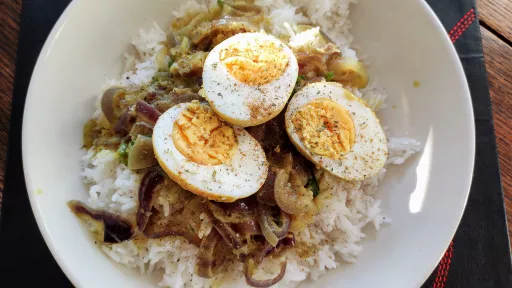

Whole eggs in coconut masala
1 hr 0 mins
Serves 4
Vegetarian
Dairy Free
Gluten Free

This is a nice, simple vegetarian egg curry with a delicate coconut masala. The whole eggs are fried first then finished off in the curry.
Ingredients
- 3 tbsp vegetable oil
- 6 free-range eggs, hard-boiled, peeled and left whole
- 1 tsp ground turmeric, turmeric
- 1 tsp Kashmiri chilli powder
- 400 ml coconut milk
- 2 medium red onions, very thinly sliced
- 4 cm fresh root ginger, finely shredded
- 3 fresh green chillies, thinly sliced with seeds
- ½ tsp salt
- 1 tsp sugar
- handful of coriander leaves, chopped
- ½ tsp garam masala
- boiled basmati rice
Instructions
- Heat the
oil3 tbsp
in a heavy-based saucepan or karahi over a medium heat, add the whole eggs6
and fry for 1-2 minutes, or until lightly coloured, then add the turmeric and chilli powder1 tsp
and cook for another 30 seconds. Stir in the coconut milk400 ml
and bring to a simmer.
- Add the
onions2 medium
, ginger4 cm
, chillies3
and salt½ tsp
, and simmer for five minutes, or until the coconut milk400 ml
has reduced in volume by half and the onions2 medium
are just softened, adding a splash of water if it becomes too thick. Stir in the sugar1 tsp
and corianderhandful
and sprinkle with garam masala½ tsp
. Halve the eggs6
, and serve with rice.
www.bbc.co.uk
Short Link
Long Link